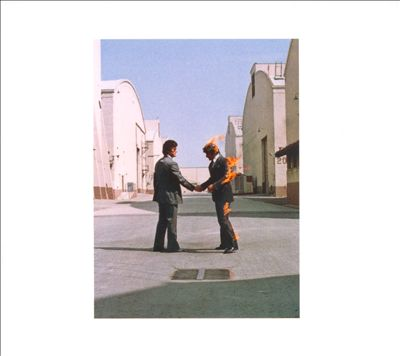

Dark Side of the Moon
* Álbum mais famoso da banda
* Duração de 42:30 minutos
* Mais de 50 milhões de cópias vendidas
* Contém várias músicas famosas da banda, como Time e Money

Pink Floyd é uma banda de rock britânica formada em Londres no ano de 1965. Ganhando seguidores como um grupo de rock psicodélico, eles se destacaram por suas composições longas, pela experimentação sonora, pelas letras filosóficas e pelas apresentações ao vivo criativas, o que levou a se tornarem uma banda líder do gênero do rock progressivo. Eles são um dos grupos mais bem-sucedidos comercialmente e influentes da história da música popular.
Os principais integrantes da banda são:
* Roger Waters (cantor, compositor e baixista)
* Nick Mason (baterista)
* David Gilmour (guitarrista, baixista, saxofonista e vocalista)
* Rick Wright (tecladista)
Conheça os principais álbuns da banda e também suas principais características:
Dark Side of the Moon
* Álbum mais famoso da banda
* Duração de 42:30 minutos
* Mais de 50 milhões de cópias vendidas
* Contém várias músicas famosas da banda, como Time e Money
The Wall
* Décimo primeiro álbum da banda
* Duração de 80:42 minutos
* Mais de 19 milhões de cópias vendidas
* Contém músicas famosas da banda, como Another Brick in The Wall Part. 1, 2 e 3
Wish You Were Here
* Nono álbum lançado pela banda
* Duração de 44:28 minutos
* Mais de 14 milhões de cópias vendidas
* Contém músicas como Wish You Were Here e Shine On You Crazy Diamond

The Division Bell
* Décimo quarto álbum gravado pela banda
* Duração de 66:32 minutos
* Mais de 12 milhões de cópias vendidas
* Contém músicas como What do You Want From Me e Take it Back